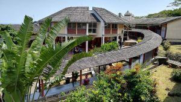
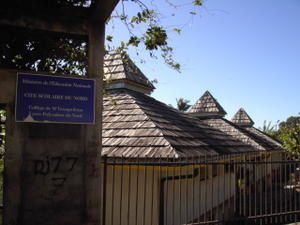
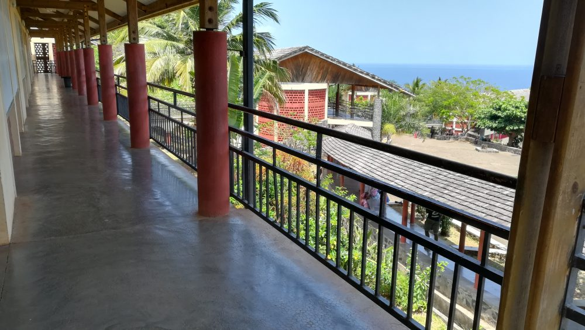
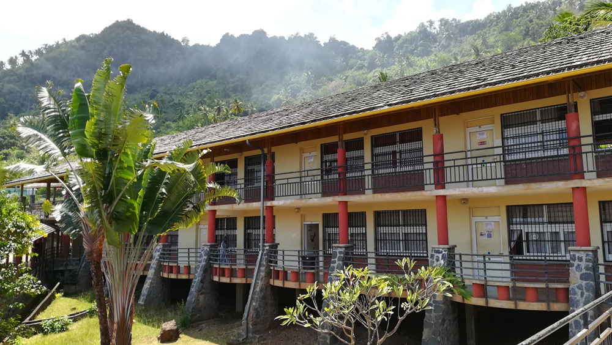
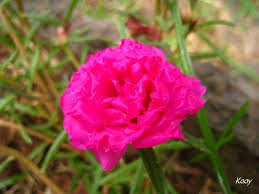
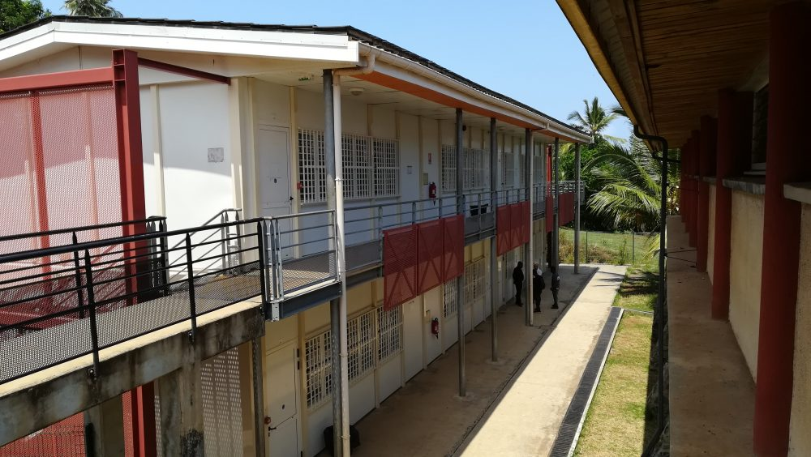

Administration
Situé dans la commune de Mtsangadoua au Nord de l’île de Mayotte, le Lycée du Nord s’intègre harmonieusement dans son environnement naturel d’une qualité exceptionnelle. Entre parois rocheuse, végétation luxuriante et lagon, son architecture en forme d’escargot et ses bâtiments aux noms de fleurs, épices et îlot évoquent les richesses de l’île aux parfums.
Bâti dans les années 90, cet établissement fut conçu pour être un collège. Il a ensuite évolué en cité scolaire pour devenir un lycée général, technologique et professionnel à partir de 2003.
Il accueille aujourd’hui environ 1700 élèves et étudiants de la seconde au BTS et 130 professionnels y travaillent pour leur bien-être et leur réussite scolaire.
batiment princinpale de tous les batiment il acceuille tous les
LES DIRIGEANTS DU LYCEE
Proviseur: M. Pascal LECOCQ
Proviseurs adjoints: Mme Ghislaine CAUVIN et M. Laurent PRIVAT
Secrétariat:
Mme Chafaanti MADI OILI (secrétariat de direction)
Mme Mariama ATTOUMANI (secrétariat élève)
Chef de travaux: Mme Chantal NOTREDAME
Gestionnaire - Agent comptable: M. Nadjim SALAHOU
Personnel de l'intendance:
Mme Navy TOUMBOU (secrétariat)
M. Soudadi DAOUD (adjoint gestionnaire)
Mme Zahara MADI ASSANI (assistante comptabilité)
ALAMANDA
batiment specialement consacre aux etude informatique
chaque batiment representent une fleurs icic le batiment A
REPRESENTE la fleurs alamanada ci dessous
tous les batiment sont ainsi choisis leur nom avec des fleurs amblematique de mayotte
voici la representation du batiment en photo
canelle
batiment specialement consacre aux matiere scientifique comme les maths l nsi tous les matiere informatique
chaque batiment representent une fleurs ici le batiment , C
REPRESENTE la fleurs DE canelle ci dessous
tous les batiment sont ainsi choisis leur nom avec des fleurs amblematique de mayotte
voici la representation du batiment en photo
hibiscus
batiment specialement consacre aux matiere de langue etrangere tous ce qui est literaire comme le francais l espagnole
chaque batiment representent une fleurs ici le batiment , H
REPRESENTE la fleurs DE hibiscus ci dessous
tous les batiment sont ainsi choisis leur nom avec des fleurs amblematique de mayotte
voici la representation du batiment en photo
Mawa
batiment specialement consacre aux matiere de francais et toutes matiere
chaque batiment representent une fleurs ici le batiment , M
REPRESENTE la fleurs DE Mawa ci dessous
tous les batiment sont ainsi choisis leur nom avec des fleurs amblematique de mayotte
voici la representation du batiment en photo
Ylang
batiment specialement consacre aux matiere de langue etrangere tous
chaque batiment representent une fleurs ici le batiment , Y
REPRESENTE la fleurs DE ylang ci dessous

tous les batiment sont ainsi choisis leur nom avec des fleurs amblematique de mayotte
voici la representation du batiment en photo
Vanille
batiment specialement consacre aux matiere des specialite
chaque batiment representent une fleurs ici le batiment , V
REPRESENTE la fleurs DE Vanille ci dessous
tous les batiment sont ainsi choisis leur nom avec des fleurs amblematique de mayotte
voici la representation du batiment en photo
tech
batiment specialement consacre aux matiere des specialite
chaque batiment representent une fleurs ici le batiment , T
REPRESENTE par l image ci dessous

dans ce batiment on retrouve la salle de conference les salle t1 et t2 etc
on y organise des reuinion des cours une salle normale a utiliser tous les jours